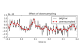

mne.Epochs¶
-
class
mne.Epochs(raw, events, event_id=None, tmin=- 0.2, tmax=0.5, baseline=None, 0, picks=None, preload=False, reject=None, flat=None, proj=True, decim=1, reject_tmin=None, reject_tmax=None, detrend=None, on_missing='error', reject_by_annotation=True, metadata=None, event_repeated='error', verbose=None)[source]¶ Epochs extracted from a Raw instance.
- Parameters
- raw
Rawobject An instance of Raw.
- events
arrayofint, shape (n_events, 3) The events typically returned by the read_events function. If some events don’t match the events of interest as specified by event_id, they will be marked as ‘IGNORED’ in the drop log.
- event_id
int|listofint|dict|None The id of the event to consider. If dict, the keys can later be used to access associated events. Example: dict(auditory=1, visual=3). If int, a dict will be created with the id as string. If a list, all events with the IDs specified in the list are used. If None, all events will be used with and a dict is created with string integer names corresponding to the event id integers.
- tmin
float Start time before event. If nothing is provided, defaults to -0.2.
- tmax
float End time after event. If nothing is provided, defaults to 0.5.
- baseline
Noneortupleof length 2 (default (None, 0)) The time interval to apply baseline correction. If None do not apply it. If baseline is (a, b) the interval is between “a (s)” and “b (s)”. If a is None the beginning of the data is used and if b is None then b is set to the end of the interval. If baseline is equal to (None, None) all the time interval is used. Correction is applied by computing mean of the baseline period and subtracting it from the data. The baseline (a, b) includes both endpoints, i.e. all timepoints t such that a <= t <= b.
- picks
str|list|slice|None Channels to include. Slices and lists of integers will be interpreted as channel indices. In lists, channel type strings (e.g.,
['meg', 'eeg']) will pick channels of those types, channel name strings (e.g.,['MEG0111', 'MEG2623']will pick the given channels. Can also be the string values “all” to pick all channels, or “data” to pick data channels. None (default) will pick all channels.- preloadbool
Load all epochs from disk when creating the object or wait before accessing each epoch (more memory efficient but can be slower).
- reject
dict|None Rejection parameters based on peak-to-peak amplitude. Valid keys are ‘grad’ | ‘mag’ | ‘eeg’ | ‘eog’ | ‘ecg’. If reject is None then no rejection is done. Example:
reject = dict(grad=4000e-13, # T / m (gradiometers) mag=4e-12, # T (magnetometers) eeg=40e-6, # V (EEG channels) eog=250e-6 # V (EOG channels) )
- flat
dict|None Rejection parameters based on flatness of signal. Valid keys are ‘grad’ | ‘mag’ | ‘eeg’ | ‘eog’ | ‘ecg’, and values are floats that set the minimum acceptable peak-to-peak amplitude. If flat is None then no rejection is done.
- projbool | ‘delayed’
Apply SSP projection vectors. If proj is ‘delayed’ and reject is not None the single epochs will be projected before the rejection decision, but used in unprojected state if they are kept. This way deciding which projection vectors are good can be postponed to the evoked stage without resulting in lower epoch counts and without producing results different from early SSP application given comparable parameters. Note that in this case baselining, detrending and temporal decimation will be postponed. If proj is False no projections will be applied which is the recommended value if SSPs are not used for cleaning the data.
- decim
int Factor by which to downsample the data from the raw file upon import. Warning: This simply selects every nth sample, data is not filtered here. If data is not properly filtered, aliasing artifacts may occur.
- reject_tminscalar |
None Start of the time window used to reject epochs (with the default None, the window will start with tmin).
- reject_tmaxscalar |
None End of the time window used to reject epochs (with the default None, the window will end with tmax).
- detrend
int|None If 0 or 1, the data channels (MEG and EEG) will be detrended when loaded. 0 is a constant (DC) detrend, 1 is a linear detrend. None is no detrending. Note that detrending is performed before baseline correction. If no DC offset is preferred (zeroth order detrending), either turn off baseline correction, as this may introduce a DC shift, or set baseline correction to use the entire time interval (will yield equivalent results but be slower).
- on_missing
str What to do if one or several event ids are not found in the recording. Valid keys are ‘error’ | ‘warning’ | ‘ignore’ Default is ‘error’. If on_missing is ‘warning’ it will proceed but warn, if ‘ignore’ it will proceed silently. Note. If none of the event ids are found in the data, an error will be automatically generated irrespective of this parameter.
- reject_by_annotationbool
Whether to reject based on annotations. If True (default), epochs overlapping with segments whose description begins with
'bad'are rejected. If False, no rejection based on annotations is performed.- metadatainstance of
pandas.DataFrame|None A
pandas.DataFramespecifying metadata about each epoch. If given,len(metadata)must equallen(events). The DataFrame may only contain values of type (str | int | float | bool). If metadata is given, then pandas-style queries may be used to select subsets of data, seemne.Epochs.__getitem__(). When a subset of the epochs is created in this (or any other supported) manner, the metadata object is subsetted accordingly, and the row indices will be modified to matchepochs.selection.New in version 0.16.
- event_repeated
str How to handle duplicates in events[:, 0]. Can be ‘error’ (default), to raise an error, ‘drop’ to only retain the row occurring first in the events, or ‘merge’ to combine the coinciding events (=duplicates) into a new event (see Notes for details).
New in version 0.19.
- verbosebool,
str,int, orNone If not None, override default verbose level (see
mne.verbose()and Logging documentation for more).
- raw
Notes
When accessing data, Epochs are detrended, baseline-corrected, and decimated, then projectors are (optionally) applied.
For indexing and slicing using
epochs[...], seemne.Epochs.__getitem__().All methods for iteration over objects (using
mne.Epochs.__iter__(),mne.Epochs.iter_evoked()ormne.Epochs.next()) use the same internal state.If event_repeated is set to “merge”, the coinciding events (duplicates) will be merged into a single event_id and assigned a new id_number as follows: event_id[‘{event_id_1}/{event_id_2}/…’] = new_id_number. For example with the event_id {‘aud’: 1, ‘vis’: 2} and the events [[0, 0, 1], [0, 0, 2]], the “merge” behavior will update both event_id and events to be: {‘aud/vis’: 3} and [[0, 0, 3], ] respectively.
- Attributes
- infoinstance of
Info Measurement info.
- event_id
dict Names of conditions corresponding to event_ids.
ch_nameslistofstrChannel names.
- selection
array List of indices of selected events (not dropped or ignored etc.). For example, if the original event array had 4 events and the second event has been dropped, this attribute would be np.array([0, 2, 3]).
- preloadbool
Indicates whether epochs are in memory.
- drop_log
listoflist A list of the same length as the event array used to initialize the Epochs object. If the i-th original event is still part of the selection, drop_log[i] will be an empty list; otherwise it will be a list of the reasons the event is not longer in the selection, e.g.:
‘IGNORED’ if it isn’t part of the current subset defined by the user; ‘NO_DATA’ or ‘TOO_SHORT’ if epoch didn’t contain enough data; names of channels that exceeded the amplitude threshold; ‘EQUALIZED_COUNTS’ (see equalize_event_counts); or ‘USER’ for user-defined reasons (see drop method).
filenamestrThe filename.
timesndarrayTime vector in seconds.
- verbosebool,
str,int, orNone If not None, override default verbose level (see
mne.verbose()and Logging documentation for more).
- infoinstance of
Methods
__contains__(self, ch_type)Check channel type membership.
__getitem__(self, item)Return an Epochs object with a copied subset of epochs.
__hash__(self)Hash the object.
__iter__(self)Facilitate iteration over epochs.
__len__(self)Return the number of epochs.
add_channels(self, add_list[, force_update_info])Append new channels to the instance.
add_proj(self, projs[, remove_existing, verbose])Add SSP projection vectors.
anonymize(self[, daysback, keep_his, verbose])Anonymize measurement information in place.
apply_baseline(self[, baseline, verbose])Baseline correct epochs.
apply_hilbert(self[, picks, envelope, …])Compute analytic signal or envelope for a subset of channels.
apply_proj(self)Apply the signal space projection (SSP) operators to the data.
as_type(self[, ch_type, mode])Compute virtual epochs using interpolated fields.
average(self[, picks, method])Compute an average over epochs.
copy(self)Return copy of Epochs instance.
crop(self[, tmin, tmax, include_tmax])Crop a time interval from the epochs.
decimate(self, decim[, offset, verbose])Decimate the epochs.
del_proj(self[, idx])Remove SSP projection vector.
drop(self, indices[, reason, verbose])Drop epochs based on indices or boolean mask.
drop_bad(self[, reject, flat, verbose])Drop bad epochs without retaining the epochs data.
drop_channels(self, ch_names)Drop channel(s).
drop_log_stats(self[, ignore])Compute the channel stats based on a drop_log from Epochs.
equalize_event_counts(self, event_ids[, method])Equalize the number of trials in each condition.
filter(self, l_freq, h_freq[, picks, …])Filter a subset of channels.
get_channel_types(self[, picks, unique, …])Get a list of channel type for each channel.
get_data(self[, picks, item])Get all epochs as a 3D array.
interpolate_bads(self[, reset_bads, mode, …])Interpolate bad MEG and EEG channels.
iter_evoked(self[, copy])Iterate over epochs as a sequence of Evoked objects.
load_data(self)Load the data if not already preloaded.
next(self[, return_event_id])Iterate over epoch data.
pick(self, picks[, exclude])Pick a subset of channels.
pick_channels(self, ch_names[, ordered])Pick some channels.
pick_types(self[, meg, eeg, stim, eog, ecg, …])Pick some channels by type and names.
plot(self[, picks, scalings, n_epochs, …])Visualize epochs.
plot_drop_log(self[, threshold, n_max_plot, …])Show the channel stats based on a drop_log from Epochs.
plot_image(self[, picks, sigma, vmin, vmax, …])Plot Event Related Potential / Fields image.
plot_projs_topomap(self[, ch_type, cmap, …])Plot SSP vector.
plot_psd(self[, fmin, fmax, tmin, tmax, …])Plot the power spectral density across channels.
plot_psd_topomap(self[, bands, vmin, vmax, …])Plot the topomap of the power spectral density across epochs.
plot_sensors(self[, kind, ch_type, title, …])Plot sensor positions.
plot_topo_image(self[, layout, sigma, vmin, …])Plot Event Related Potential / Fields image on topographies.
rename_channels(self, mapping)Rename channels.
reorder_channels(self, ch_names)Reorder channels.
resample(self, sfreq[, npad, window, …])Resample data.
save(self, fname[, split_size, fmt, …])Save epochs in a fif file.
savgol_filter(self, h_freq[, verbose])Filter the data using Savitzky-Golay polynomial method.
set_channel_types(self, mapping[, verbose])Define the sensor type of channels.
set_eeg_reference(self[, ref_channels, …])Specify which reference to use for EEG data.
set_meas_date(self, meas_date)Set the measurement start date.
set_montage(self, montage[, match_case, verbose])Set EEG sensor configuration and head digitization.
shift_time(self, tshift[, relative])Shift time scale in epoched or evoked data.
standard_error(self[, picks])Compute standard error over epochs.
subtract_evoked(self[, evoked])Subtract an evoked response from each epoch.
time_as_index(self, times[, use_rounding])Convert time to indices.
to_data_frame(self[, picks, index, …])Export data in tabular structure as a pandas DataFrame.
-
__contains__(self, ch_type)[source]¶ Check channel type membership.
- Parameters
- ch_type
str Channel type to check for. Can be e.g. ‘meg’, ‘eeg’, ‘stim’, etc.
- ch_type
- Returns
- inbool
Whether or not the instance contains the given channel type.
Examples
Channel type membership can be tested as:
>>> 'meg' in inst True >>> 'seeg' in inst False
-
__getitem__(self, item)[source]¶ Return an Epochs object with a copied subset of epochs.
- Parameters
- item
slice, array_like,str, orlist See below for use cases.
- item
- Returns
- epochsinstance of
Epochs See below for use cases.
- epochsinstance of
Notes
Epochs can be accessed as
epochs[...]in several ways:epochs[idx]: ReturnEpochsobject with a subset of epochs (supports single index and python-style slicing).epochs['name']: ReturnEpochsobject with a copy of the subset of epochs corresponding to an experimental condition as specified by ‘name’.If conditions are tagged by names separated by ‘/’ (e.g. ‘audio/left’, ‘audio/right’), and ‘name’ is not in itself an event key, this selects every event whose condition contains the ‘name’ tag (e.g., ‘left’ matches ‘audio/left’ and ‘visual/left’; but not ‘audio_left’). Note that tags selection is insensitive to order: tags like ‘auditory/left’ and ‘left/auditory’ will be treated the same way when accessed.
epochs[['name_1', 'name_2', ... ]]: ReturnEpochsobject with a copy of the subset of epochs corresponding to multiple experimental conditions as specified by'name_1', 'name_2', ....If conditions are separated by ‘/’, selects every item containing every list tag (e.g. [‘audio’, ‘left’] selects ‘audio/left’ and ‘audio/center/left’, but not ‘audio/right’).
epochs['pandas query']: ReturnEpochsobject with a copy of the subset of epochs (and matching metadata) that matchpandas querycalled withself.metadata.eval, e.g.:epochs["col_a > 2 and col_b == 'foo'"]
This is only called if Pandas is installed and
self.metadatais apandas.DataFrame.New in version 0.16.
-
__iter__(self)[source]¶ Facilitate iteration over epochs.
This method resets the object iteration state to the first epoch.
Notes
This enables the use of this Python pattern:
>>> for epoch in epochs: >>> print(epoch)
Where
epochis given by successive outputs ofmne.Epochs.next().
-
__len__(self)[source]¶ Return the number of epochs.
- Returns
- n_epochs
int The number of remaining epochs.
- n_epochs
Notes
This function only works if bad epochs have been dropped.
Examples
This can be used as:
>>> epochs.drop_bad() >>> len(epochs) 43 >>> len(epochs.events) 43
-
add_channels(self, add_list, force_update_info=False)[source]¶ Append new channels to the instance.
- Parameters
- add_list
list A list of objects to append to self. Must contain all the same type as the current object.
- force_update_infobool
If True, force the info for objects to be appended to match the values in self. This should generally only be used when adding stim channels for which important metadata won’t be overwritten.
New in version 0.12.
- add_list
- Returns
See also
Notes
If
selfis a Raw instance that has been preloaded into anumpy.memmapinstance, the memmap will be resized.
-
add_proj(self, projs, remove_existing=False, verbose=None)[source]¶ Add SSP projection vectors.
- Parameters
- projs
list List with projection vectors.
- remove_existingbool
Remove the projection vectors currently in the file.
- verbosebool,
str,int, orNone If not None, override default verbose level (see
mne.verbose()and Logging documentation for more). Defaults to self.verbose.
- projs
- Returns
Examples using
add_proj:
-
anonymize(self, daysback=None, keep_his=False, verbose=None)[source]¶ Anonymize measurement information in place.
- Parameters
- daysback
int|None Number of days to subtract from all dates. If None (default) the date of service will be set to Jan 1ˢᵗ 2000. This parameter is ignored if
info['meas_date'] is None.- keep_hisbool
If True his_id of subject_info will NOT be overwritten. Defaults to False.
Warning
This could mean that
infois not fully anonymized. Use with caution.- verbosebool,
str,int, orNone If not None, override default verbose level (see
mne.verbose()and Logging documentation for more).
- daysback
- Returns
- infoinstance of
Info Measurement information for the dataset.
- infoinstance of
Notes
Removes potentially identifying information if it exist in
info. Specifically for each of the following we use:- meas_date, file_id, meas_id
A default value, or as specified by
daysback.
- subject_info
Default values, except for ‘birthday’ which is adjusted to maintain the subject age.
- experimenter, proj_name, description
Default strings.
- utc_offset
None.
- proj_id
Zeros.
- proc_history
Dates use the meas_date logic, and experimenter a default string.
- helium_info, device_info
Dates use the meas_date logic, meta info uses defaults.
If
info['meas_date']is None, it will remain None during processing the above fields.Operates in place.
New in version 0.13.0.
-
apply_baseline(self, baseline=None, 0, verbose=None)[source]¶ Baseline correct epochs.
- Parameters
- baseline
tupleof length 2 The time interval to apply baseline correction. If None do not apply it. If baseline is (a, b) the interval is between “a (s)” and “b (s)”. If a is None the beginning of the data is used and if b is None then b is set to the end of the interval. If baseline is equal to (None, None) all the time interval is used. Correction is applied by computing mean of the baseline period and subtracting it from the data. The baseline (a, b) includes both endpoints, i.e. all timepoints t such that a <= t <= b.
- verbosebool,
str,int, orNone If not None, override default verbose level (see
mne.verbose()and Logging documentation for more). Defaults to self.verbose.
- baseline
- Returns
- epochsinstance of
Epochs The baseline-corrected Epochs object.
- epochsinstance of
Notes
Baseline correction can be done multiple times.
New in version 0.10.0.
-
apply_hilbert(self, picks=None, envelope=False, n_jobs=1, n_fft='auto', verbose=None)[source]¶ Compute analytic signal or envelope for a subset of channels.
- Parameters
- picks
str|list|slice|None Channels to include. Slices and lists of integers will be interpreted as channel indices. In lists, channel type strings (e.g.,
['meg', 'eeg']) will pick channels of those types, channel name strings (e.g.,['MEG0111', 'MEG2623']will pick the given channels. Can also be the string values “all” to pick all channels, or “data” to pick data channels. None (default) will pick all data channels(excluding reference MEG channels).- envelopebool
Compute the envelope signal of each channel. Default False. See Notes.
- n_jobs
int The number of jobs to run in parallel (default 1). Requires the joblib package.
- n_fft
int|None|str Points to use in the FFT for Hilbert transformation. The signal will be padded with zeros before computing Hilbert, then cut back to original length. If None, n == self.n_times. If ‘auto’, the next highest fast FFT length will be use.
- verbosebool,
str,int, orNone If not None, override default verbose level (see
mne.verbose()and Logging documentation for more). Defaults to self.verbose.
- picks
- Returns
Notes
Parameters
If
envelope=False, the analytic signal for the channels defined inpicksis computed and the data of the Raw object is converted to a complex representation (the analytic signal is complex valued).If
envelope=True, the absolute value of the analytic signal for the channels defined inpicksis computed, resulting in the envelope signal.If envelope=False, more memory is required since the original raw data as well as the analytic signal have temporarily to be stored in memory. If n_jobs > 1, more memory is required as
len(picks) * n_timesadditional time points need to be temporaily stored in memory.Also note that the
n_fftparameter will allow you to pad the signal with zeros before performing the Hilbert transform. This padding is cut off, but it may result in a slightly different result (particularly around the edges). Use at your own risk.Analytic signal
The analytic signal “x_a(t)” of “x(t)” is:
x_a = F^{-1}(F(x) 2U) = x + i y
where “F” is the Fourier transform, “U” the unit step function, and “y” the Hilbert transform of “x”. One usage of the analytic signal is the computation of the envelope signal, which is given by “e(t) = abs(x_a(t))”. Due to the linearity of Hilbert transform and the MNE inverse solution, the enevlope in source space can be obtained by computing the analytic signal in sensor space, applying the MNE inverse, and computing the envelope in source space.
Examples using
apply_hilbert:
-
apply_proj(self)[source]¶ Apply the signal space projection (SSP) operators to the data.
Notes
Once the projectors have been applied, they can no longer be removed. It is usually not recommended to apply the projectors at too early stages, as they are applied automatically later on (e.g. when computing inverse solutions). Hint: using the copy method individual projection vectors can be tested without affecting the original data. With evoked data, consider the following example:
projs_a = mne.read_proj('proj_a.fif') projs_b = mne.read_proj('proj_b.fif') # add the first, copy, apply and see ... evoked.add_proj(a).copy().apply_proj().plot() # add the second, copy, apply and see ... evoked.add_proj(b).copy().apply_proj().plot() # drop the first and see again evoked.copy().del_proj(0).apply_proj().plot() evoked.apply_proj() # finally keep both
Examples using
apply_proj:
-
as_type(self, ch_type='grad', mode='fast')[source]¶ Compute virtual epochs using interpolated fields.
Warning
Using virtual epochs to compute inverse can yield unexpected results. The virtual channels have ‘_v’ appended at the end of the names to emphasize that the data contained in them are interpolated.
- Parameters
- Returns
- epochsinstance of
mne.EpochsArray The transformed epochs object containing only virtual channels.
- epochsinstance of
Notes
This method returns a copy and does not modify the data it operates on. It also returns an EpochsArraw instance.
New in version 0.20.0.
-
average(self, picks=None, method='mean')[source]¶ Compute an average over epochs.
- Parameters
- picks
str|list|slice|None Channels to include. Slices and lists of integers will be interpreted as channel indices. In lists, channel type strings (e.g.,
['meg', 'eeg']) will pick channels of those types, channel name strings (e.g.,['MEG0111', 'MEG2623']will pick the given channels. Can also be the string values “all” to pick all channels, or “data” to pick data channels. None (default) will pick all data channels.- method
str|callable() How to combine the data. If “mean”/”median”, the mean/median are returned. Otherwise, must be a callable which, when passed an array of shape (n_epochs, n_channels, n_time) returns an array of shape (n_channels, n_time). Note that due to file type limitations, the kind for all these will be “average”.
- picks
- Returns
Notes
Computes an average of all epochs in the instance, even if they correspond to different conditions. To average by condition, do
epochs[condition].average()for each condition separately.When picks is None and epochs contain only ICA channels, no channels are selected, resulting in an error. This is because ICA channels are not considered data channels (they are of misc type) and only data channels are selected when picks is None.
The method parameter allows e.g. robust averaging. For example, one could do:
>>> from scipy.stats import trim_mean >>> trim = lambda x: trim_mean(x, 0.1, axis=0) >>> epochs.average(method=trim)
This would compute the trimmed mean.
Examples using
average:
-
property
ch_names¶ Channel names.
-
property
compensation_grade¶ The current gradient compensation grade.
-
copy(self)[source]¶ Return copy of Epochs instance.
- Returns
- epochsinstance of
Epochs A copy of the object.
- epochsinstance of
Examples using
copy:
-
crop(self, tmin=None, tmax=None, include_tmax=True)[source]¶ Crop a time interval from the epochs.
- Parameters
- Returns
- epochsinstance of
Epochs The cropped epochs.
- epochsinstance of
Notes
Unlike Python slices, MNE time intervals include both their end points; crop(tmin, tmax) returns the interval tmin <= t <= tmax.
Note that the object is modified in place.
-
decimate(self, decim, offset=0, verbose=None)[source]¶ Decimate the epochs.
Note
No filtering is performed. To avoid aliasing, ensure your data are properly lowpassed.
- Parameters
- decim
int The amount to decimate data.
- offset
int Apply an offset to where the decimation starts relative to the sample corresponding to t=0. The offset is in samples at the current sampling rate.
New in version 0.12.
- verbosebool,
str,int, orNone If not None, override default verbose level (see
mne.verbose()and Logging documentation for more). Defaults to self.verbose.
- decim
- Returns
- epochsinstance of
Epochs The decimated Epochs object.
- epochsinstance of
Notes
Decimation can be done multiple times. For example,
epochs.decimate(2).decimate(2)will be the same asepochs.decimate(4). If decim is 1, this method does not copy the underlying data.New in version 0.10.0.
-
del_proj(self, idx='all')[source]¶ Remove SSP projection vector.
Note
The projection vector can only be removed if it is inactive (has not been applied to the data).
-
drop(self, indices, reason='USER', verbose=None)[source]¶ Drop epochs based on indices or boolean mask.
Note
The indices refer to the current set of undropped epochs rather than the complete set of dropped and undropped epochs. They are therefore not necessarily consistent with any external indices (e.g., behavioral logs). To drop epochs based on external criteria, do not use the
preload=Trueflag when constructing an Epochs object, and call this method before calling themne.Epochs.drop_bad()ormne.Epochs.load_data()methods.- Parameters
- indices
arrayofintor bool Set epochs to remove by specifying indices to remove or a boolean mask to apply (where True values get removed). Events are correspondingly modified.
- reason
str Reason for dropping the epochs (‘ECG’, ‘timeout’, ‘blink’ etc). Default: ‘USER’.
- verbosebool,
str,int, orNone If not None, override default verbose level (see
mne.verbose()and Logging documentation for more). Defaults to self.verbose.
- indices
- Returns
- epochsinstance of
Epochs The epochs with indices dropped. Operates in-place.
- epochsinstance of
-
drop_bad(self, reject='existing', flat='existing', verbose=None)[source]¶ Drop bad epochs without retaining the epochs data.
Should be used before slicing operations.
Warning
This operation is slow since all epochs have to be read from disk. To avoid reading epochs from disk multiple times, use
mne.Epochs.load_data().- Parameters
- reject
dict|str|None Rejection parameters based on peak-to-peak amplitude. Valid keys are ‘grad’ | ‘mag’ | ‘eeg’ | ‘eog’ | ‘ecg’. If reject is None then no rejection is done. If ‘existing’, then the rejection parameters set at instantiation are used.
- flat
dict|str|None Rejection parameters based on flatness of signal. Valid keys are ‘grad’ | ‘mag’ | ‘eeg’ | ‘eog’ | ‘ecg’, and values are floats that set the minimum acceptable peak-to-peak amplitude. If flat is None then no rejection is done. If ‘existing’, then the flat parameters set at instantiation are used.
- verbosebool,
str,int, orNone If not None, override default verbose level (see
mne.verbose()and Logging documentation for more). Defaults to self.verbose.
- reject
- Returns
- epochsinstance of
Epochs The epochs with bad epochs dropped. Operates in-place.
- epochsinstance of
Notes
Dropping bad epochs can be done multiple times with different
rejectandflatparameters. However, once an epoch is dropped, it is dropped forever, so if more lenient thresholds may subsequently be applied,epochs.copyshould be used.Examples using
drop_bad:
-
drop_channels(self, ch_names)[source]¶ Drop channel(s).
- Parameters
- Returns
See also
Notes
New in version 0.9.0.
Examples using
drop_channels:
-
drop_log_stats(self, ignore='IGNORED')[source]¶ Compute the channel stats based on a drop_log from Epochs.
- Parameters
- ignore
list The drop reasons to ignore.
- ignore
- Returns
- perc
float Total percentage of epochs dropped.
- perc
See also
-
equalize_event_counts(self, event_ids, method='mintime')[source]¶ Equalize the number of trials in each condition.
It tries to make the remaining epochs occurring as close as possible in time. This method works based on the idea that if there happened to be some time-varying (like on the scale of minutes) noise characteristics during a recording, they could be compensated for (to some extent) in the equalization process. This method thus seeks to reduce any of those effects by minimizing the differences in the times of the events in the two sets of epochs. For example, if one had event times [1, 2, 3, 4, 120, 121] and the other one had [3.5, 4.5, 120.5, 121.5], it would remove events at times [1, 2] in the first epochs and not [20, 21].
- Parameters
- event_ids
list The event types to equalize. Each entry in the list can either be a str (single event) or a list of str. In the case where one of the entries is a list of str, event_ids in that list will be grouped together before equalizing trial counts across conditions. In the case where partial matching is used (using ‘/’ in event_ids), event_ids will be matched according to the provided tags, that is, processing works as if the event_ids matched by the provided tags had been supplied instead. The event_ids must identify nonoverlapping subsets of the epochs.
- method
str If ‘truncate’, events will be truncated from the end of each event list. If ‘mintime’, timing differences between each event list will be minimized.
- event_ids
- Returns
Notes
For example (if epochs.event_id was {‘Left’: 1, ‘Right’: 2, ‘Nonspatial’:3}:
epochs.equalize_event_counts([[‘Left’, ‘Right’], ‘Nonspatial’])
would equalize the number of trials in the ‘Nonspatial’ condition with the total number of trials in the ‘Left’ and ‘Right’ conditions.
If multiple indices are provided (e.g. ‘Left’ and ‘Right’ in the example above), it is not guaranteed that after equalization, the conditions will contribute evenly. E.g., it is possible to end up with 70 ‘Nonspatial’ trials, 69 ‘Left’ and 1 ‘Right’.
Examples using
equalize_event_counts:
-
property
filename¶ The filename.
-
filter(self, l_freq, h_freq, picks=None, filter_length='auto', l_trans_bandwidth='auto', h_trans_bandwidth='auto', n_jobs=1, method='fir', iir_params=None, phase='zero', fir_window='hamming', fir_design='firwin', skip_by_annotation='edge', 'bad_acq_skip', pad='edge', verbose=None)[source]¶ Filter a subset of channels.
- Parameters
- l_freq
float|None For FIR filters, the lower pass-band edge; for IIR filters, the upper cutoff frequency. If None the data are only low-passed.
- h_freq
float|None For FIR filters, the upper pass-band edge; for IIR filters, the upper cutoff frequency. If None the data are only high-passed.
- picks
str|list|slice|None Channels to include. Slices and lists of integers will be interpreted as channel indices. In lists, channel type strings (e.g.,
['meg', 'eeg']) will pick channels of those types, channel name strings (e.g.,['MEG0111', 'MEG2623']will pick the given channels. Can also be the string values “all” to pick all channels, or “data” to pick data channels. None (default) will pick all data channels.- filter_length
str|int Length of the FIR filter to use (if applicable):
‘auto’ (default): The filter length is chosen based on the size of the transition regions (6.6 times the reciprocal of the shortest transition band for fir_window=’hamming’ and fir_design=”firwin2”, and half that for “firwin”).
str: A human-readable time in units of “s” or “ms” (e.g., “10s” or “5500ms”) will be converted to that number of samples if
phase="zero", or the shortest power-of-two length at least that duration forphase="zero-double".int: Specified length in samples. For fir_design=”firwin”, this should not be used.
- l_trans_bandwidth
float|str Width of the transition band at the low cut-off frequency in Hz (high pass or cutoff 1 in bandpass). Can be “auto” (default) to use a multiple of
l_freq:min(max(l_freq * 0.25, 2), l_freq)
Only used for
method='fir'.- h_trans_bandwidth
float|str Width of the transition band at the high cut-off frequency in Hz (low pass or cutoff 2 in bandpass). Can be “auto” (default in 0.14) to use a multiple of
h_freq:min(max(h_freq * 0.25, 2.), info['sfreq'] / 2. - h_freq)
Only used for
method='fir'.- n_jobs
int|str Number of jobs to run in parallel. Can be ‘cuda’ if
cupyis installed properly and method=’fir’.- method
str ‘fir’ will use overlap-add FIR filtering, ‘iir’ will use IIR forward-backward filtering (via filtfilt).
- iir_params
dict|None Dictionary of parameters to use for IIR filtering. If iir_params is None and method=”iir”, 4th order Butterworth will be used. For more information, see
mne.filter.construct_iir_filter().- phase
str Phase of the filter, only used if
method='fir'. Symmetric linear-phase FIR filters are constructed, and ifphase='zero'(default), the delay of this filter is compensated for, making it non-causal. Ifphase=='zero-double', then this filter is applied twice, once forward, and once backward (also making it non-causal). If ‘minimum’, then a minimum-phase filter will be constricted and applied, which is causal but has weaker stop-band suppression.New in version 0.13.
- fir_window
str The window to use in FIR design, can be “hamming” (default), “hann” (default in 0.13), or “blackman”.
New in version 0.15.
- fir_design
str Can be “firwin” (default) to use
scipy.signal.firwin(), or “firwin2” to usescipy.signal.firwin2(). “firwin” uses a time-domain design technique that generally gives improved attenuation using fewer samples than “firwin2”.New in version 0.15.
- skip_by_annotation
str|listofstr If a string (or list of str), any annotation segment that begins with the given string will not be included in filtering, and segments on either side of the given excluded annotated segment will be filtered separately (i.e., as independent signals). The default (
('edge', 'bad_acq_skip')will separately filter any segments that were concatenated bymne.concatenate_raws()ormne.io.Raw.append(), or separated during acquisition. To disable, provide an empty list. Only used ifinstis raw.New in version 0.16..
- pad
str The type of padding to use. Supports all
numpy.pad()modeoptions. Can also be “reflect_limited”, which pads with a reflected version of each vector mirrored on the first and last values of the vector, followed by zeros. Only used formethod='fir'.- verbosebool,
str,int, orNone If not None, override default verbose level (see
mne.verbose()and Logging documentation for more). Defaults to self.verbose.
- l_freq
- Returns
See also
Notes
Applies a zero-phase low-pass, high-pass, band-pass, or band-stop filter to the channels selected by
picks. The data are modified inplace.The object has to have the data loaded e.g. with
preload=Trueorself.load_data().l_freqandh_freqare the frequencies below which and above which, respectively, to filter out of the data. Thus the uses are:l_freq < h_freq: band-pass filterl_freq > h_freq: band-stop filterl_freq is not None and h_freq is None: high-pass filterl_freq is None and h_freq is not None: low-pass filter
self.info['lowpass']andself.info['highpass']are only updated with picks=None.Note
If n_jobs > 1, more memory is required as
len(picks) * n_timesadditional time points need to be temporaily stored in memory.For more information, see the tutorials Background information on filtering and Filtering and resampling data and
mne.filter.create_filter().New in version 0.15.
Examples using
filter:
-
get_channel_types(self, picks=None, unique=False, only_data_chs=False)[source]¶ Get a list of channel type for each channel.
- Parameters
- picks
str|list|slice|None Channels to include. Slices and lists of integers will be interpreted as channel indices. In lists, channel type strings (e.g.,
['meg', 'eeg']) will pick channels of those types, channel name strings (e.g.,['MEG0111', 'MEG2623']will pick the given channels. Can also be the string values “all” to pick all channels, or “data” to pick data channels. None (default) will pick all channels.- uniquebool
Whether to return only unique channel types. Default is
False.- only_data_chsbool
Whether to ignore non-data channels. Default is
False.
- picks
- Returns
- channel_types
list The channel types.
- channel_types
Examples using
get_channel_types:
-
get_data(self, picks=None, item=None)[source]¶ Get all epochs as a 3D array.
- Parameters
- picks
str|list|slice|None Channels to include. Slices and lists of integers will be interpreted as channel indices. In lists, channel type strings (e.g.,
['meg', 'eeg']) will pick channels of those types, channel name strings (e.g.,['MEG0111', 'MEG2623']will pick the given channels. Can also be the string values “all” to pick all channels, or “data” to pick data channels. None (default) will pick all channels.- item
slice| array_like |str|list|None The items to get. See
mne.Epochs.__getitem__()for a description of valid options. This can be substantially faster for obtaining an ndarray than__getitem__()for repeated access on large Epochs objects. None (default) is an alias forslice(None).New in version 0.20.
- picks
- Returns
- data
arrayof shape (n_epochs, n_channels, n_times) A view on epochs data.
- data
Examples using
get_data:
-
interpolate_bads(self, reset_bads=True, mode='accurate', origin='auto', verbose=None)[source]¶ Interpolate bad MEG and EEG channels.
Operates in place.
- Parameters
- reset_badsbool
If True, remove the bads from info.
- mode
str Either
'accurate'or'fast', determines the quality of the Legendre polynomial expansion used for interpolation of MEG channels.- originarray_like, shape (3,) |
str Origin of the sphere in the head coordinate frame and in meters. Can be
'auto'(default), which means a head-digitization-based origin fit.New in version 0.17.
- verbosebool,
str,int, orNone If not None, override default verbose level (see
mne.verbose()and Logging documentation for more). Defaults to self.verbose.
- Returns
Notes
New in version 0.9.0.
Examples using
interpolate_bads:
-
iter_evoked(self, copy=False)[source]¶ Iterate over epochs as a sequence of Evoked objects.
The Evoked objects yielded will each contain a single epoch (i.e., no averaging is performed).
This method resets the object iteration state to the first epoch.
- Parameters
- copybool
If False copies of data and measurement info will be omitted to save time.
-
load_data(self)[source]¶ Load the data if not already preloaded.
- Returns
- epochsinstance of
Epochs The epochs object.
- epochsinstance of
Notes
This function operates in-place.
New in version 0.10.0.
Examples using
load_data:
-
property
metadata¶ Get the metadata.
-
pick(self, picks, exclude=)[source]¶ Pick a subset of channels.
- Parameters
- picks
str|list|slice|None Channels to include. Slices and lists of integers will be interpreted as channel indices. In lists, channel type strings (e.g.,
['meg', 'eeg']) will pick channels of those types, channel name strings (e.g.,['MEG0111', 'MEG2623']will pick the given channels. Can also be the string values “all” to pick all channels, or “data” to pick data channels. None (default) will pick all channels.- exclude
list|str Set of channels to exclude, only used when picking based on types (e.g., exclude=”bads” when picks=”meg”).
- picks
- Returns
-
pick_channels(self, ch_names, ordered=False)[source]¶ Pick some channels.
- Parameters
- Returns
See also
Notes
The channel names given are assumed to be a set, i.e. the order does not matter. The original order of the channels is preserved. You can use
reorder_channelsto set channel order if necessary.New in version 0.9.0.
Examples using
pick_channels:
-
pick_types(self, meg=True, eeg=False, stim=False, eog=False, ecg=False, emg=False, ref_meg='auto', misc=False, resp=False, chpi=False, exci=False, ias=False, syst=False, seeg=False, dipole=False, gof=False, bio=False, ecog=False, fnirs=False, csd=False, include=, exclude='bads', selection=None, verbose=None)[source]¶ Pick some channels by type and names.
- Parameters
- megbool |
str If True include all MEG channels. If False include None. If string it can be ‘mag’, ‘grad’, ‘planar1’ or ‘planar2’ to select only magnetometers, all gradiometers, or a specific type of gradiometer.
- eegbool
If True include EEG channels.
- stimbool
If True include stimulus channels.
- eogbool
If True include EOG channels.
- ecgbool
If True include ECG channels.
- emgbool
If True include EMG channels.
- ref_megbool |
str If True include CTF / 4D reference channels. If ‘auto’, the reference channels are only included if compensations are present.
- miscbool
If True include miscellaneous analog channels.
- respbool
If True include response-trigger channel. For some MEG systems this is separate from the stim channel.
- chpibool
If True include continuous HPI coil channels.
- excibool
Flux excitation channel used to be a stimulus channel.
- iasbool
Internal Active Shielding data (maybe on Triux only).
- systbool
System status channel information (on Triux systems only).
- seegbool
Stereotactic EEG channels.
- dipolebool
Dipole time course channels.
- gofbool
Dipole goodness of fit channels.
- biobool
Bio channels.
- ecogbool
Electrocorticography channels.
- fnirsbool |
str Functional near-infrared spectroscopy channels. If True include all fNIRS channels. If False (default) include none. If string it can be ‘hbo’ (to include channels measuring oxyhemoglobin) or ‘hbr’ (to include channels measuring deoxyhemoglobin).
- csdbool
EEG-CSD channels.
- include
listofstr List of additional channels to include. If empty do not include any.
- exclude
listofstr|str List of channels to exclude. If ‘bads’ (default), exclude channels in
info['bads'].- selection
listofstr Restrict sensor channels (MEG, EEG) to this list of channel names.
- verbosebool,
str,int, orNone If not None, override default verbose level (see
mne.verbose()and Logging documentation for more). Defaults to self.verbose.
- megbool |
- Returns
See also
Notes
New in version 0.9.0.
Examples using
pick_types:
-
plot(self, picks=None, scalings=None, n_epochs=20, n_channels=20, title=None, events=None, event_colors=None, order=None, show=True, block=False, decim='auto', noise_cov=None, butterfly=False, show_scrollbars=True, epoch_colors=None, event_id=None)[source]¶ Visualize epochs.
Bad epochs can be marked with a left click on top of the epoch. Bad channels can be selected by clicking the channel name on the left side of the main axes. Calling this function drops all the selected bad epochs as well as bad epochs marked beforehand with rejection parameters.
- Parameters
- picks
str|list|slice|None Channels to include. Slices and lists of integers will be interpreted as channel indices. In lists, channel type strings (e.g.,
['meg', 'eeg']) will pick channels of those types, channel name strings (e.g.,['MEG0111', 'MEG2623']will pick the given channels. Can also be the string values “all” to pick all channels, or “data” to pick data channels. None (default) will pick good data channels.- scalings
dict| ‘auto’ |None Scaling factors for the traces. If any fields in scalings are ‘auto’, the scaling factor is set to match the 99.5th percentile of a subset of the corresponding data. If scalings == ‘auto’, all scalings fields are set to ‘auto’. If any fields are ‘auto’ and data is not preloaded, a subset of epochs up to 100mb will be loaded. If None, defaults to:
dict(mag=1e-12, grad=4e-11, eeg=20e-6, eog=150e-6, ecg=5e-4, emg=1e-3, ref_meg=1e-12, misc=1e-3, stim=1, resp=1, chpi=1e-4, whitened=10.)
- n_epochs
int The number of epochs per view. Defaults to 20.
- n_channels
int The number of channels per view. Defaults to 20.
- title
str|None The title of the window. If None, epochs name will be displayed. Defaults to None.
- events
None,array, shape (n_events, 3) Events to show with vertical bars. If events are provided, the epoch numbers are not shown to prevent overlap. You can toggle epoch numbering through options (press ‘o’ key). You can use
mne.viz.plot_events()as a legend for the colors. By default, the coloring scheme is the same.Warning
If the epochs have been resampled, the events no longer align with the data.
New in version 0.14.0.
- event_colors
None,dict Dictionary of event_id value and its associated color. If None, colors are automatically drawn from a default list (cycled through if number of events longer than list of default colors). Uses the same coloring scheme as
mne.viz.plot_events().New in version 0.14.0.
- order
arrayofstr|None Order in which to plot channel types.
New in version 0.18.0.
- showbool
Show figure if True. Defaults to True.
- blockbool
Whether to halt program execution until the figure is closed. Useful for rejecting bad trials on the fly by clicking on an epoch. Defaults to False.
- decim
int| ‘auto’ Amount to decimate the data during display for speed purposes. You should only decimate if the data are sufficiently low-passed, otherwise aliasing can occur. The ‘auto’ mode (default) uses the decimation that results in a sampling rate at least three times larger than
info['lowpass'](e.g., a 40 Hz lowpass will result in at least a 120 Hz displayed sample rate).New in version 0.15.0.
- noise_covinstance of
Covariance|str|None Noise covariance used to whiten the data while plotting. Whitened data channels are scaled by
scalings['whitened'], and their channel names are shown in italic. Can be a string to load a covariance from disk. See alsomne.Evoked.plot_white()for additional inspection of noise covariance properties when whitening evoked data. For data processed with SSS, the effective dependence between magnetometers and gradiometers may introduce differences in scaling, consider usingmne.Evoked.plot_white().New in version 0.16.0.
- butterflybool
Whether to directly call the butterfly view.
New in version 0.18.0.
- show_scrollbarsbool
Whether to show scrollbars when the plot is initialized. Can be toggled after initialization by pressing z (“zen mode”) while the plot window is focused. Default is
True.New in version 0.19.0.
- epoch_colors
listof (n_epochs)list(of n_channels) |None Colors to use for individual epochs. If None, use default colors.
- event_id
dict|None Dictionary of event labels (e.g. ‘aud_l’) as keys and associated event integers as values. Useful when
eventscontains event numbers not present inepochs.event_id(e.g., because of event subselection). Values inevent_idwill take precedence over those inepochs.event_idwhen there are overlapping keys.New in version 0.20.
- picks
- Returns
- figinstance of
matplotlib.figure.Figure The figure.
- figinstance of
Notes
The arrow keys (up/down/left/right) can be used to navigate between channels and epochs and the scaling can be adjusted with - and + (or =) keys, but this depends on the backend matplotlib is configured to use (e.g., mpl.use(
TkAgg) should work). Full screen mode can be toggled with f11 key. The amount of epochs and channels per view can be adjusted with home/end and page down/page up keys. These can also be set through options dialog by pressingokey.hkey plots a histogram of peak-to-peak values along with the used rejection thresholds. Butterfly plot can be toggled withbkey. Right mouse click adds a vertical line to the plot. Click ‘help’ button at bottom left corner of the plotter to view all the options.New in version 0.10.0.
Examples using
plot:
-
plot_drop_log(self, threshold=0, n_max_plot=20, subject='Unknown', color=0.9, 0.9, 0.9, width=0.8, ignore='IGNORED', show=True)[source]¶ Show the channel stats based on a drop_log from Epochs.
- Parameters
- threshold
float The percentage threshold to use to decide whether or not to plot. Default is zero (always plot).
- n_max_plot
int Maximum number of channels to show stats for.
- subject
str The subject name to use in the title of the plot.
- color
tuple|str Color to use for the bars.
- width
float Width of the bars.
- ignore
list The drop reasons to ignore.
- showbool
Show figure if True.
- threshold
- Returns
- figinstance of
matplotlib.figure.Figure The figure.
- figinstance of
Examples using
plot_drop_log:
-
plot_image(self, picks=None, sigma=0.0, vmin=None, vmax=None, colorbar=True, order=None, show=True, units=None, scalings=None, cmap=None, fig=None, axes=None, overlay_times=None, combine=None, group_by=None, evoked=True, ts_args=None, title=None, clear=False)[source]¶ Plot Event Related Potential / Fields image.
- Parameters
- picks
str|list|slice|None Channels to include. Slices and lists of integers will be interpreted as channel indices. In lists, channel type strings (e.g.,
['meg', 'eeg']) will pick channels of those types, channel name strings (e.g.,['MEG0111', 'MEG2623']will pick the given channels. Can also be the string values “all” to pick all channels, or “data” to pick data channels. None (default) will pick good data channels.picksinteracts withgroup_byandcombineto determine the number of figures generated; see Notes.- sigma
float The standard deviation of a Gaussian smoothing window applied along the epochs axis of the image. If 0, no smoothing is applied. Defaults to 0.
- vmin
None|float|callable() The min value in the image (and the ER[P/F]). The unit is µV for EEG channels, fT for magnetometers and fT/cm for gradiometers. If vmin is None and multiple plots are returned, the limit is equalized within channel types. Hint: to specify the lower limit of the data, use
vmin=lambda data: data.min().- vmax
None|float|callable() The max value in the image (and the ER[P/F]). The unit is µV for EEG channels, fT for magnetometers and fT/cm for gradiometers. If vmin is None and multiple plots are returned, the limit is equalized within channel types.
- colorbarbool
Display or not a colorbar.
- order
None|arrayofint|callable() If not
None, order is used to reorder the epochs along the y-axis of the image. If it is an array ofint, its length should match the number of good epochs. If it is a callable it should accept two positional parameters (timesanddata, wheredata.shape == (len(good_epochs), len(times))) and return anarrayof indices that will sortdataalong its first axis.- showbool
Show figure if True.
- units
dict|None The units of the channel types used for axes labels. If None, defaults to
units=dict(eeg='µV', grad='fT/cm', mag='fT').- scalings
dict|None The scalings of the channel types to be applied for plotting. If None, defaults to
scalings=dict(eeg=1e6, grad=1e13, mag=1e15, eog=1e6).- cmap
None| colormap | (colormap, bool) | ‘interactive’ Colormap. If tuple, the first value indicates the colormap to use and the second value is a boolean defining interactivity. In interactive mode the colors are adjustable by clicking and dragging the colorbar with left and right mouse button. Left mouse button moves the scale up and down and right mouse button adjusts the range. Hitting space bar resets the scale. Up and down arrows can be used to change the colormap. If ‘interactive’, translates to (‘RdBu_r’, True). If None, “RdBu_r” is used, unless the data is all positive, in which case “Reds” is used.
- fig
Figure|None Figureinstance to draw the image to. Figure must contain the correct number of axes for drawing the epochs image, the evoked response, and a colorbar (depending on values ofevokedandcolorbar). IfNonea new figure is created. Defaults toNone.- axes
listofAxes|dictoflistofAxes|None List of
Axesobjects in which to draw the image, evoked response, and colorbar (in that order). Length of list must be 1, 2, or 3 (depending on values ofcolorbarandevokedparameters). If adict, each entry must be a list of Axes objects with the same constraints as above. If bothaxesandgroup_byare dicts, their keys must match. Providing non-Nonevalues for bothfigandaxesresults in an error. Defaults toNone.- overlay_timesarray_like, shape (n_epochs,) |
None Times (in seconds) at which to draw a line on the corresponding row of the image (e.g., a reaction time associated with each epoch). Note that
overlay_timesshould be ordered to correspond with theEpochsobject (i.e.,overlay_times[0]corresponds toepochs[0], etc).- combine
None|str|callable() How to combine information across channels. If a
str, must be one of ‘mean’, ‘median’, ‘std’ (standard deviation) or ‘gfp’ (global field power). If callable, the callable must accept one positional input (data of shape(n_epochs, n_channels, n_times)) and return anarrayof shape(n_epochs, n_times). For example:combine = lambda data: np.median(data, axis=1)
If
combineisNone, channels are combined by computing GFP, unlessgroup_byis alsoNoneandpicksis a list of specific channels (not channel types), in which case no combining is performed and each channel gets its own figure. See Notes for further details. Defaults toNone.- group_by
None|dict Specifies which channels are aggregated into a single figure, with aggregation method determined by the
combineparameter. If notNone, oneFigureis made per dict entry; the dict key will be used as the figure title and the dict values must be lists of picks (either channel names or integer indices ofepochs.ch_names). For example:group_by=dict(Left_ROI=[1, 2, 3, 4], Right_ROI=[5, 6, 7, 8])
Note that within a dict entry all channels must have the same type.
group_byinteracts withpicksandcombineto determine the number of figures generated; see Notes. Defaults toNone.- evokedbool
Draw the ER[P/F] below the image or not.
- ts_args
None|dict Arguments passed to a call to plot_compare_evokeds to style the evoked plot below the image. Defaults to an empty dictionary, meaning plot_compare_evokeds will be called with default parameters.
- title
None|str If
str, will be plotted as figure title. Otherwise, the title will indicate channel(s) or channel type being plotted. Defaults toNone.- clearbool
Whether to clear the axes before plotting (if
figoraxesare provided). Defaults toFalse.
- picks
- Returns
Notes
You can control how channels are aggregated into one figure or plotted in separate figures through a combination of the
picks,group_by, andcombineparameters. Ifgroup_byis adict, the result is oneFigureper dictionary key (for any valid values ofpicksandcombine). Ifgroup_byisNone, the number and content of the figures generated depends on the values ofpicksandcombine, as summarized in this table:group_by
picks
combine
result
dict
None, int, list of int, ch_name, list of ch_names, ch_type, list of ch_types
None, string, or callable
1 figure per dict key
None
None, ch_type, list of ch_types
None, string, or callable
1 figure per ch_type
int, ch_name, list of int, list of ch_names
None
1 figure per pick
string or callable
1 figure
Examples using
plot_image:
-
plot_projs_topomap(self, ch_type=None, cmap=None, sensors=True, colorbar=False, res=64, size=1, show=True, outlines='head', contours=6, image_interp='bilinear', axes=None, vlim=None, None, sphere=None, extrapolate='box', border=0)[source]¶ Plot SSP vector.
- Parameters
- ch_type‘mag’ | ‘grad’ | ‘planar1’ | ‘planar2’ | ‘eeg’ |
None|list The channel type to plot. For ‘grad’, the gradiometers are collec- ted in pairs and the RMS for each pair is plotted. If None (default), it will return all channel types present. If a list of ch_types is provided, it will return multiple figures.
- cmapmatplotlib colormap | (colormap, bool) | ‘interactive’ |
None Colormap to use. If tuple, the first value indicates the colormap to use and the second value is a boolean defining interactivity. In interactive mode (only works if
colorbar=True) the colors are adjustable by clicking and dragging the colorbar with left and right mouse button. Left mouse button moves the scale up and down and right mouse button adjusts the range. Hitting space bar resets the range. Up and down arrows can be used to change the colormap. If None (default), ‘Reds’ is used for all positive data, otherwise defaults to ‘RdBu_r’. If ‘interactive’, translates to (None, True).- sensorsbool |
str Add markers for sensor locations to the plot. Accepts matplotlib plot format string (e.g., ‘r+’ for red plusses). If True, a circle will be used (via .add_artist). Defaults to True.
- colorbarbool
Plot a colorbar.
- res
int The resolution of the topomap image (n pixels along each side).
- sizescalar
Side length of the topomaps in inches (only applies when plotting multiple topomaps at a time).
- showbool
Show figure if True.
- outlines‘head’ | ‘skirt’ |
dict|None The outlines to be drawn. If ‘head’, the default head scheme will be drawn. If ‘skirt’ the head scheme will be drawn, but sensors are allowed to be plotted outside of the head circle. If dict, each key refers to a tuple of x and y positions, the values in ‘mask_pos’ will serve as image mask. Alternatively, a matplotlib patch object can be passed for advanced masking options, either directly or as a function that returns patches (required for multi-axis plots). If None, nothing will be drawn. Defaults to ‘head’.
- contours
int|arrayoffloat The number of contour lines to draw. If 0, no contours will be drawn. When an integer, matplotlib ticker locator is used to find suitable values for the contour thresholds (may sometimes be inaccurate, use array for accuracy). If an array, the values represent the levels for the contours. Defaults to 6.
- image_interp
str The image interpolation to be used. All matplotlib options are accepted.
- axesinstance of
Axes|list|None The axes to plot to. If list, the list must be a list of Axes of the same length as the number of projectors. If instance of Axes, there must be only one projector. Defaults to None.
- vlim
tupleof length 2 | ‘joint’ Colormap limits to use. If
tuple, specifies the lower and upper bounds of the colormap (in that order); providingNonefor either of these will set the corresponding boundary at the min/max of the data (separately for each projector). The keyword value'joint'will compute the colormap limits jointly across all provided projectors of the same channel type, using the min/max of the projector data. If vlim is'joint',infomust not beNone. Defaults to(None, None).- sphere
float| array_like |str|None The sphere parameters to use for the cartoon head. Can be array-like of shape (4,) to give the X/Y/Z origin and radius in meters, or a single float to give the radius (origin assumed 0, 0, 0). Can also be a spherical ConductorModel, which will use the origin and radius. Can be “auto” to use a digitization-based fit. Can also be None (default) to use ‘auto’ when enough extra digitization points are available, and 0.095 otherwise. Currently the head radius does not affect plotting.
New in version 0.20.
- extrapolate
str Options:
- ‘box’ (default)
Extrapolate to four points placed to form a square encompassing all data points, where each side of the square is three times the range of the data in the respective dimension.
- ‘local’
Extrapolate only to nearby points (approximately to points closer than median inter-electrode distance).
- ‘head’
Extrapolate to the edges of the head circle (does not work well with sensors outside the head circle).
New in version 0.20.
- border
float| ‘mean’ Value to extrapolate to on the topomap borders. If
'mean'then each extrapolated point has the average value of its neighbours.New in version 0.20.
- ch_type‘mag’ | ‘grad’ | ‘planar1’ | ‘planar2’ | ‘eeg’ |
- Returns
- figinstance of
Figure Figure distributing one image per channel across sensor topography.
- figinstance of
Examples using
plot_projs_topomap:
-
plot_psd(self, fmin=0, fmax=inf, tmin=None, tmax=None, proj=False, bandwidth=None, adaptive=False, low_bias=True, normalization='length', picks=None, ax=None, color='black', xscale='linear', area_mode='std', area_alpha=0.33, dB=True, estimate='auto', show=True, n_jobs=1, average=False, line_alpha=None, spatial_colors=True, sphere=None, verbose=None)[source]¶ Plot the power spectral density across channels.
Different channel types are drawn in sub-plots. When the data have been processed with a bandpass, lowpass or highpass filter, dashed lines indicate the boundaries of the filter (–). The line noise frequency is also indicated with a dashed line (-.).
- Parameters
- fmin
float Start frequency to consider.
- fmax
float End frequency to consider.
- tmin
float|None Start time to consider.
- tmax
float|None End time to consider.
- projbool
Apply projection.
- bandwidth
float The bandwidth of the multi taper windowing function in Hz. The default value is a window half-bandwidth of 4.
- adaptivebool
Use adaptive weights to combine the tapered spectra into PSD (slow, use n_jobs >> 1 to speed up computation).
- low_biasbool
Only use tapers with more than 90% spectral concentration within bandwidth.
- normalization
str Either “full” or “length” (default). If “full”, the PSD will be normalized by the sampling rate as well as the length of the signal (as in nitime).
- picks
str|list|slice|None Channels to include. Slices and lists of integers will be interpreted as channel indices. In lists, channel type strings (e.g.,
['meg', 'eeg']) will pick channels of those types, channel name strings (e.g.,['MEG0111', 'MEG2623']will pick the given channels. Can also be the string values “all” to pick all channels, or “data” to pick data channels. None (default) will pick good data channels Cannot be None if ax is supplied.If both picks and ax are None separate subplots will be created for each standard channel type (mag, grad, and eeg).- axinstance of
Axes|None Axes to plot into. If None, axes will be created.
- color
str|tuple A matplotlib-compatible color to use. Has no effect when spatial_colors=True.
- xscale
str Can be ‘linear’ (default) or ‘log’.
- area_mode
str|None Mode for plotting area. If ‘std’, the mean +/- 1 STD (across channels) will be plotted. If ‘range’, the min and max (across channels) will be plotted. Bad channels will be excluded from these calculations. If None, no area will be plotted. If average=False, no area is plotted.
- area_alpha
float Alpha for the area.
- dBbool
Plot Power Spectral Density (PSD), in units (amplitude**2/Hz (dB)) if
dB=True, andestimate='power'orestimate='auto'. Plot PSD in units (amplitude**2/Hz) ifdB=Falseand,estimate='power'. Plot Amplitude Spectral Density (ASD), in units (amplitude/sqrt(Hz)), ifdB=Falseandestimate='amplitude'orestimate='auto'. Plot ASD, in units (amplitude/sqrt(Hz) (db)), ifdB=Trueandestimate='amplitude'.- estimate
str, {‘auto’, ‘power’, ‘amplitude’} Can be “power” for power spectral density (PSD), “amplitude” for amplitude spectrum density (ASD), or “auto” (default), which uses “power” when dB is True and “amplitude” otherwise.
- showbool
Show figure if True.
- n_jobs
int The number of jobs to run in parallel (default 1). Requires the joblib package.
- averagebool
If False, the PSDs of all channels is displayed. No averaging is done and parameters area_mode and area_alpha are ignored. When False, it is possible to paint an area (hold left mouse button and drag) to plot a topomap.
- line_alpha
float|None Alpha for the PSD line. Can be None (default) to use 1.0 when
average=Trueand 0.1 whenaverage=False.- spatial_colorsbool
Whether to use spatial colors. Only used when
average=False.- sphere
float| array_like |str|None The sphere parameters to use for the cartoon head. Can be array-like of shape (4,) to give the X/Y/Z origin and radius in meters, or a single float to give the radius (origin assumed 0, 0, 0). Can also be a spherical ConductorModel, which will use the origin and radius. Can be “auto” to use a digitization-based fit. Can also be None (default) to use ‘auto’ when enough extra digitization points are available, and 0.095 otherwise. Currently the head radius does not affect plotting.
New in version 0.20.
- verbosebool,
str,int, orNone If not None, override default verbose level (see
mne.verbose()and Logging documentation for more).
- fmin
- Returns
- figinstance of
Figure Figure with frequency spectra of the data channels.
- figinstance of
Examples using
plot_psd:
-
plot_psd_topomap(self, bands=None, vmin=None, vmax=None, tmin=None, tmax=None, proj=False, bandwidth=None, adaptive=False, low_bias=True, normalization='length', ch_type=None, cmap='RdBu_r', agg_fun=None, dB=True, n_jobs=1, normalize=False, cbar_fmt='%0.3f', outlines='head', axes=None, show=True, sphere=None, verbose=None)[source]¶ Plot the topomap of the power spectral density across epochs.
- Parameters
- bands
listoftuple|None The lower and upper frequency and the name for that band. If None, (default) expands to:
- bands = [(0, 4, ‘Delta’), (4, 8, ‘Theta’), (8, 12, ‘Alpha’),
(12, 30, ‘Beta’), (30, 45, ‘Gamma’)]
- vmin
float|callable()|None The value specifying the lower bound of the color range. If None np.min(data) is used. If callable, the output equals vmin(data).
- vmax
float|callable()|None The value specifying the upper bound of the color range. If None, the maximum absolute value is used. If callable, the output equals vmax(data). Defaults to None.
- tmin
float|None Start time to consider.
- tmax
float|None End time to consider.
- projbool
Apply projection.
- bandwidth
float The bandwidth of the multi taper windowing function in Hz. The default value is a window half-bandwidth of 4 Hz.
- adaptivebool
Use adaptive weights to combine the tapered spectra into PSD (slow, use n_jobs >> 1 to speed up computation).
- low_biasbool
Only use tapers with more than 90% spectral concentration within bandwidth.
- normalization
str Either “full” or “length” (default). If “full”, the PSD will be normalized by the sampling rate as well as the length of the signal (as in nitime).
- ch_type‘mag’ | ‘grad’ | ‘planar1’ | ‘planar2’ | ‘eeg’ |
None The channel type to plot. For ‘grad’, the gradiometers are collected in pairs and the mean for each pair is plotted. If None, then first available channel type from order given above is used. Defaults to None.
- cmapmatplotlib colormap | (colormap, bool) | ‘interactive’ |
None Colormap to use. If tuple, the first value indicates the colormap to use and the second value is a boolean defining interactivity. In interactive mode the colors are adjustable by clicking and dragging the colorbar with left and right mouse button. Left mouse button moves the scale up and down and right mouse button adjusts the range. Hitting space bar resets the range. Up and down arrows can be used to change the colormap. If None (default), ‘Reds’ is used for all positive data, otherwise defaults to ‘RdBu_r’. If ‘interactive’, translates to (None, True).
- agg_fun
callable() The function used to aggregate over frequencies. Defaults to np.sum. if normalize is True, else np.mean.
- dBbool
If True, transform data to decibels (with
10 * np.log10(data)) following the application of agg_fun. Only valid if normalize is False.- n_jobs
int The number of jobs to run in parallel (default 1). Requires the joblib package.
- normalizebool
If True, each band will be divided by the total power. Defaults to False.
- cbar_fmt
str The colorbar format. Defaults to ‘%0.3f’.
- outlines‘head’ | ‘skirt’ |
dict|None The outlines to be drawn. If ‘head’, the default head scheme will be drawn. If ‘skirt’ the head scheme will be drawn, but sensors are allowed to be plotted outside of the head circle. If dict, each key refers to a tuple of x and y positions, the values in ‘mask_pos’ will serve as image mask. Alternatively, a matplotlib patch object can be passed for advanced masking options, either directly or as a function that returns patches (required for multi-axis plots). If None, nothing will be drawn. Defaults to ‘head’.
- axes
listofAxes|None List of axes to plot consecutive topographies to. If None the axes will be created automatically. Defaults to None.
- showbool
Show figure if True.
- sphere
float| array_like |str|None The sphere parameters to use for the cartoon head. Can be array-like of shape (4,) to give the X/Y/Z origin and radius in meters, or a single float to give the radius (origin assumed 0, 0, 0). Can also be a spherical ConductorModel, which will use the origin and radius. Can be “auto” to use a digitization-based fit. Can also be None (default) to use ‘auto’ when enough extra digitization points are available, and 0.095 otherwise. Currently the head radius does not affect plotting.
New in version 0.20.
- verbosebool,
str,int, orNone If not None, override default verbose level (see
mne.verbose()and Logging documentation for more).
- bands
- Returns
- figinstance of
Figure Figure distributing one image per channel across sensor topography.
- figinstance of
Examples using
plot_psd_topomap:
-
plot_sensors(self, kind='topomap', ch_type=None, title=None, show_names=False, ch_groups=None, to_sphere=True, axes=None, block=False, show=True, sphere=None, verbose=None)[source]¶ Plot sensor positions.
- Parameters
- kind
str Whether to plot the sensors as 3d, topomap or as an interactive sensor selection dialog. Available options ‘topomap’, ‘3d’, ‘select’. If ‘select’, a set of channels can be selected interactively by using lasso selector or clicking while holding control key. The selected channels are returned along with the figure instance. Defaults to ‘topomap’.
- ch_type
None|str The channel type to plot. Available options ‘mag’, ‘grad’, ‘eeg’, ‘seeg’, ‘ecog’, ‘all’. If
'all', all the available mag, grad, eeg, seeg and ecog channels are plotted. If None (default), then channels are chosen in the order given above.- title
str|None Title for the figure. If None (default), equals to
'Sensor positions (%s)' % ch_type.- show_namesbool |
arrayofstr Whether to display all channel names. If an array, only the channel names in the array are shown. Defaults to False.
- ch_groups‘position’ |
arrayof shape (n_ch_groups, n_picks) |None Channel groups for coloring the sensors. If None (default), default coloring scheme is used. If ‘position’, the sensors are divided into 8 regions. See
orderkwarg ofmne.viz.plot_raw(). If array, the channels are divided by picks given in the array.New in version 0.13.0.
- to_spherebool
Whether to project the 3d locations to a sphere. When False, the sensor array appears similar as to looking downwards straight above the subject’s head. Has no effect when kind=’3d’. Defaults to True.
New in version 0.14.0.
- axesinstance of
Axes| instance ofAxes3D|None Axes to draw the sensors to. If
kind='3d', axes must be an instance of Axes3D. If None (default), a new axes will be created.New in version 0.13.0.
- blockbool
Whether to halt program execution until the figure is closed. Defaults to False.
New in version 0.13.0.
- showbool
Show figure if True. Defaults to True.
- sphere
float| array_like |str|None The sphere parameters to use for the cartoon head. Can be array-like of shape (4,) to give the X/Y/Z origin and radius in meters, or a single float to give the radius (origin assumed 0, 0, 0). Can also be a spherical ConductorModel, which will use the origin and radius. Can be “auto” to use a digitization-based fit. Can also be None (default) to use ‘auto’ when enough extra digitization points are available, and 0.095 otherwise. Currently the head radius does not affect plotting.
New in version 0.20.
- verbosebool,
str,int, orNone If not None, override default verbose level (see
mne.verbose()and Logging documentation for more). Defaults to self.verbose.
- kind
- Returns
See also
Notes
This function plots the sensor locations from the info structure using matplotlib. For drawing the sensors using mayavi see
mne.viz.plot_alignment().New in version 0.12.0.
Examples using
plot_sensors:
-
plot_topo_image(self, layout=None, sigma=0.0, vmin=None, vmax=None, colorbar=None, order=None, cmap='RdBu_r', layout_scale=0.95, title=None, scalings=None, border='none', fig_facecolor='k', fig_background=None, font_color='w', show=True)[source]¶ Plot Event Related Potential / Fields image on topographies.
- Parameters
- layoutinstance of
Layout System specific sensor positions.
- sigma
float The standard deviation of the Gaussian smoothing to apply along the epoch axis to apply in the image. If 0., no smoothing is applied.
- vmin
float The min value in the image. The unit is µV for EEG channels, fT for magnetometers and fT/cm for gradiometers.
- vmax
float The max value in the image. The unit is µV for EEG channels, fT for magnetometers and fT/cm for gradiometers.
- colorbarbool |
None Whether to display a colorbar or not. If
Nonea colorbar will be shown only if all channels are of the same type. Defaults toNone.- order
None|arrayofint|callable() If not None, order is used to reorder the epochs on the y-axis of the image. If it’s an array of int it should be of length the number of good epochs. If it’s a callable the arguments passed are the times vector and the data as 2d array (data.shape[1] == len(times)).
- cmapcolormap
Colors to be mapped to the values.
- layout_scale
float Scaling factor for adjusting the relative size of the layout on the canvas.
- title
str Title of the figure.
- scalings
dict|None The scalings of the channel types to be applied for plotting. If
None, defaults to dict(eeg=1e6, grad=1e13, mag=1e15).- border
str Matplotlib borders style to be used for each sensor plot.
- fig_facecolorcolor
The figure face color. Defaults to black.
- fig_background
None|array A background image for the figure. This must be a valid input to
matplotlib.pyplot.imshow(). Defaults toNone.- font_colorcolor
The color of tick labels in the colorbar. Defaults to white.
- showbool
Whether to show the figure. Defaults to
True.
- layoutinstance of
- Returns
- figinstance of
matplotlib.figure.Figure Figure distributing one image per channel across sensor topography.
- figinstance of
Notes
In an interactive Python session, this plot will be interactive; clicking on a channel image will pop open a larger view of the image; this image will always have a colorbar even when the topo plot does not (because it shows multiple sensor types).
-
property
proj¶ Whether or not projections are active.
-
rename_channels(self, mapping)[source]¶ Rename channels.
- Parameters
- mapping
dict|callable() A dictionary mapping the old channel to a new channel name e.g. {‘EEG061’ : ‘EEG161’}. Can also be a callable function that takes and returns a string (new in version 0.10.0).
- mapping
- Returns
Notes
New in version 0.9.0.
Examples using
rename_channels:
-
reorder_channels(self, ch_names)[source]¶ Reorder channels.
- Parameters
- ch_names
list The desired channel order.
- ch_names
- Returns
See also
Notes
Channel names must be unique. Channels that are not in
ch_namesare dropped.New in version 0.16.0.
-
resample(self, sfreq, npad='auto', window='boxcar', n_jobs=1, pad='edge', verbose=None)[source]¶ Resample data.
Note
Data must be loaded.
- Parameters
- sfreq
float New sample rate to use.
- npad
int|str Amount to pad the start and end of the data. Can also be “auto” to use a padding that will result in a power-of-two size (can be much faster).
- window
str|tuple Frequency-domain window to use in resampling. See
scipy.signal.resample().- n_jobs
int|str Number of jobs to run in parallel. Can be ‘cuda’ if
cupyis installed properly.- pad
str The type of padding to use. Supports all
numpy.pad()modeoptions. Can also be “reflect_limited”, which pads with a reflected version of each vector mirrored on the first and last values of the vector, followed by zeros. Only used formethod='fir'. The default is'edge', which pads with the edge values of each vector.New in version 0.15.
- verbosebool,
str,int, orNone If not None, override default verbose level (see
mne.verbose()and Logging documentation for more). Defaults to self.verbose.
- sfreq
- Returns
See also
Notes
For some data, it may be more accurate to use npad=0 to reduce artifacts. This is dataset dependent – check your data!
Examples using
resample:
-
save(self, fname, split_size='2GB', fmt='single', overwrite=False, verbose=True)[source]¶ Save epochs in a fif file.
- Parameters
- fname
str The name of the file, which should end with -epo.fif or -epo.fif.gz.
- split_size
str|int Large raw files are automatically split into multiple pieces. This parameter specifies the maximum size of each piece. If the parameter is an integer, it specifies the size in Bytes. It is also possible to pass a human-readable string, e.g., 100MB. Note: Due to FIFF file limitations, the maximum split size is 2GB.
New in version 0.10.0.
- fmt
str Format to save data. Valid options are ‘double’ or ‘single’ for 64- or 32-bit float, or for 128- or 64-bit complex numbers respectively. Note: Data are processed with double precision. Choosing single-precision, the saved data will slightly differ due to the reduction in precision.
New in version 0.17.
- overwritebool
If True, the destination file (if it exists) will be overwritten. If False (default), an error will be raised if the file exists. To overwrite original file (the same one that was loaded), data must be preloaded upon reading. This defaults to True in 0.18 but will change to False in 0.19.
New in version 0.18.
- verbosebool,
str,int, orNone If not None, override default verbose level (see
mne.verbose()and Logging documentation for more). Defaults to self.verbose.
- fname
Notes
Bad epochs will be dropped before saving the epochs to disk.
Examples using
save:
-
savgol_filter(self, h_freq, verbose=None)[source]¶ Filter the data using Savitzky-Golay polynomial method.
- Parameters
- h_freq
float Approximate high cut-off frequency in Hz. Note that this is not an exact cutoff, since Savitzky-Golay filtering 1 is done using polynomial fits instead of FIR/IIR filtering. This parameter is thus used to determine the length of the window over which a 5th-order polynomial smoothing is used.
- verbosebool,
str,int, orNone If not None, override default verbose level (see
mne.verbose()and Logging documentation for more). Defaults to self.verbose.
- h_freq
- Returns
See also
Notes
For Savitzky-Golay low-pass approximation, see:
New in version 0.9.0.
References
- 1
Abraham Savitzky and Marcel J. E. Golay. Smoothing and differentiation of data by simplified least squares procedures. Analytical Chemistry, 36(8):1627–1639, 1964. doi:10.1021/ac60214a047.
Examples
>>> import mne >>> from os import path as op >>> evoked_fname = op.join(mne.datasets.sample.data_path(), 'MEG', 'sample', 'sample_audvis-ave.fif') >>> evoked = mne.read_evokeds(evoked_fname, baseline=(None, 0))[0] >>> evoked.savgol_filter(10.) # low-pass at around 10 Hz >>> evoked.plot()
-
set_channel_types(self, mapping, verbose=None)[source]¶ Define the sensor type of channels.
- Parameters
- mapping
dict A dictionary mapping a channel to a sensor type (str), e.g.,
{'EEG061': 'eog'}.- verbosebool,
str,int, orNone If not None, override default verbose level (see
mne.verbose()and Logging documentation for more). Defaults to self.verbose.
- mapping
- Returns
Notes
The following sensor types are accepted:
ecg, eeg, emg, eog, exci, ias, misc, resp, seeg, stim, syst, ecog, hbo, hbr, fnirs_raw, fnirs_od
New in version 0.9.0.
Examples using
set_channel_types:
-
set_eeg_reference(self, ref_channels='average', projection=False, ch_type='auto', verbose=None)[source]¶ Specify which reference to use for EEG data.
Use this function to explicitly specify the desired reference for EEG. This can be either an existing electrode or a new virtual channel. This function will re-reference the data according to the desired reference.
- Parameters
- ref_channels
listofstr|str The name(s) of the channel(s) used to construct the reference. To apply an average reference, specify
'average'here (default). If an empty list is specified, the data is assumed to already have a proper reference and MNE will not attempt any re-referencing of the data. Defaults to an average reference.- projectionbool
If
ref_channels='average'this argument specifies if the average reference should be computed as a projection (True) or not (False; default). Ifprojection=True, the average reference is added as a projection and is not applied to the data (it can be applied afterwards with theapply_projmethod). Ifprojection=False, the average reference is directly applied to the data. Ifref_channelsis not'average',projectionmust be set toFalse(the default in this case).- ch_type‘auto’ | ‘eeg’ | ‘ecog’ | ‘seeg’
The name of the channel type to apply the reference to. If ‘auto’, the first channel type of eeg, ecog or seeg that is found (in that order) will be selected.
New in version 0.19.
- verbosebool,
str,int, orNone If not None, override default verbose level (see
mne.verbose()and Logging documentation for more). Defaults to self.verbose.
- ref_channels
- Returns
See also
mne.set_bipolar_referenceConvenience function for creating bipolar references.
Notes
Some common referencing schemes and the corresponding value for the
ref_channelsparameter:- Average reference:
A new virtual reference electrode is created by averaging the current EEG signal by setting
ref_channels='average'. Bad EEG channels are automatically excluded if they are properly set ininfo['bads'].
- A single electrode:
Set
ref_channelsto a list containing the name of the channel that will act as the new reference, for exampleref_channels=['Cz'].
- The mean of multiple electrodes:
A new virtual reference electrode is created by computing the average of the current EEG signal recorded from two or more selected channels. Set
ref_channelsto a list of channel names, indicating which channels to use. For example, to apply an average mastoid reference, when using the 10-20 naming scheme, setref_channels=['M1', 'M2'].
If a reference is requested that is not the average reference, this function removes any pre-existing average reference projections.
During source localization, the EEG signal should have an average reference.
In order to apply a reference, the data must be preloaded. This is not necessary if
ref_channels='average'andprojection=True.For an average reference, bad EEG channels are automatically excluded if they are properly set in
info['bads'].
New in version 0.9.0.
-
set_meas_date(self, meas_date)[source]¶ Set the measurement start date.
- Parameters
- meas_date
datetime|float|tuple|None The new measurement date. If datetime object, it must be timezone-aware and in UTC. A tuple of (seconds, microseconds) or float (alias for
(meas_date, 0)) can also be passed and a datetime object will be automatically created. If None, will remove the time reference.
- meas_date
- Returns
See also
Notes
If you want to remove all time references in the file, call
mne.io.anonymize_info(inst.info)after callinginst.set_meas_date(None).New in version 0.20.
-
set_montage(self, montage, match_case=True, verbose=None)[source]¶ Set EEG sensor configuration and head digitization.
- Parameters
- montage
None|str|DigMontage A montage containing channel positions. If str or DigMontage is specified, the channel info will be updated with the channel positions. Default is None. See also the documentation of
mne.channels.DigMontagefor more information.- match_casebool
If True (default), channel name matching will be case sensitive.
New in version 0.20.
- verbosebool,
str,int, orNone If not None, override default verbose level (see
mne.verbose()and Logging documentation for more). Defaults to self.verbose.
- montage
- Returns
Notes
Operates in place.
-
shift_time(self, tshift, relative=True)[source]¶ Shift time scale in epoched or evoked data.
- Parameters
- tshift
float The (absolute or relative) time shift in seconds. If
relativeis True, positive tshift increases the time value associated with each sample, while negative tshift decreases it.- relativebool
If True, increase or decrease time values by
tshiftseconds. Otherwise, shift the time values such that the time of the first sample equalstshift.
- tshift
- Returns
- epochsinstance of
Epochs The modified Epochs instance.
- epochsinstance of
Notes
This method allows you to shift the time values associated with each data sample by an arbitrary amount. It does not resample the signal or change the data values in any way.
-
standard_error(self, picks=None)[source]¶ Compute standard error over epochs.
- Parameters
- picks
str|list|slice|None Channels to include. Slices and lists of integers will be interpreted as channel indices. In lists, channel type strings (e.g.,
['meg', 'eeg']) will pick channels of those types, channel name strings (e.g.,['MEG0111', 'MEG2623']will pick the given channels. Can also be the string values “all” to pick all channels, or “data” to pick data channels. None (default) will pick all data channels.
- picks
- Returns
- evokedinstance of
Evoked The standard error over epochs.
- evokedinstance of
-
subtract_evoked(self, evoked=None)[source]¶ Subtract an evoked response from each epoch.
Can be used to exclude the evoked response when analyzing induced activity, see e.g. [1].
- Parameters
- Returns
- selfinstance of
Epochs The modified instance (instance is also modified inplace).
- selfinstance of
References
- 1
David et al. “Mechanisms of evoked and induced responses in MEG/EEG”, NeuroImage, vol. 31, no. 4, pp. 1580-1591, July 2006.
-
property
times¶ Time vector in seconds.
-
property
tmax¶ Last time point.
-
property
tmin¶ First time point.
-
to_data_frame(self, picks=None, index=None, scalings=None, copy=True, long_format=False, time_format='ms')[source]¶ Export data in tabular structure as a pandas DataFrame.
Channels are converted to columns in the DataFrame. By default, additional columns “time”, “epoch” (epoch number), and “condition” (epoch event description) are added, unless
indexis notNone(in which case the columns specified inindexwill be used to form the DataFrame’s index instead).- Parameters
- picks
str|list|slice|None Channels to include. Slices and lists of integers will be interpreted as channel indices. In lists, channel type strings (e.g.,
['meg', 'eeg']) will pick channels of those types, channel name strings (e.g.,['MEG0111', 'MEG2623']will pick the given channels. Can also be the string values “all” to pick all channels, or “data” to pick data channels. None (default) will pick all channels.- index
str|listofstr|None Kind of index to use for the DataFrame. If
None, a sequential integer index (pandas.RangeIndex) will be used. If'time', apandas.Float64Index,pandas.Int64Index, orpandas.TimedeltaIndexwill be used (depending on the value oftime_format). If a list of two or more string values, apandas.MultiIndexwill be created. Valid string values are ‘time’, ‘epoch’, and ‘condition’. Defaults toNone.- scalings
dict|None Scaling factor applied to the channels picked. If
None, defaults todict(eeg=1e6, mag=1e15, grad=1e13)— i.e., converts EEG to µV, magnetometers to fT, and gradiometers to fT/cm.- copybool
If
True, data will be copied. Otherwise data may be modified in place. Defaults toTrue.- long_formatbool
If True, the DataFrame is returned in long format where each row is one observation of the signal at a unique combination of time point, channel, epoch number, and condition. For convenience, a
ch_typecolumn is added to facilitate subsetting the resulting DataFrame. Defaults toFalse.- time_format
str|None Desired time format. If
None, no conversion is applied, and time values remain as float values in seconds. If'ms', time values will be rounded to the nearest millisecond and converted to integers. If'timedelta', time values will be converted topandas.Timedeltavalues. Defaults to'ms'.New in version 0.20.
- picks
- Returns
- dfinstance of
pandas.DataFrame A dataframe suitable for usage with other statistical/plotting/analysis packages.
- dfinstance of
Examples using
to_data_frame: